Welcome back to “7 Quick Takes Friday,” an occasional feature that offers a glimpse of where my thoughts have been lately. Because I kept my camera nearby this week, for reasons that will soon become obvious, this edition will be a predominantly visual reflection.
-1-
PRETTY IN PINK: Can you think of a better way to launch the summer? My Minnesota friend Mary had this idea for a summer kick-off, and a North Dakota friend and I borrowed it. I think I’ve got a new “heading into summer” tradition. I wasn’t ready for summer before this. NOW I’m ready for summer.
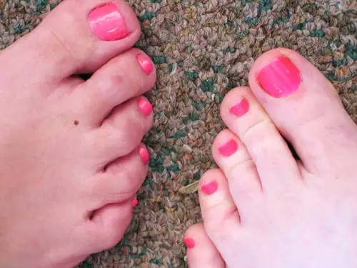
-2-
KICK! Our week started on Sunday, when we attended six soccer games. Though I don’t usually expect to get a great shot of anything at a soccer game, the perfect opportunity came to me toward the end of our oldest son’s last game of the season. I like this shot because of its movement and what it represents. This is the son who started out his soccer career as a small boy intent mainly on chasing his shadows rather than kicking or assisting with a goal. It’s been enjoyable watching him grow into becoming an integral part of his team.
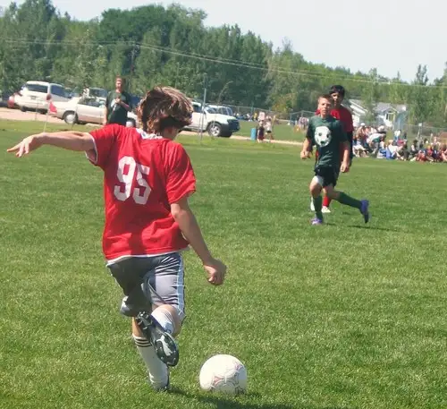
-3-
BIG POND BOUND: We’d no sooner put his soccer shoes away for the season when it was time to hunt down a tie and nice shirt for 8th-grade graduation Tuesday evening. The event centered around Mass with music provided by the 8th-grade choir members. This is one of the things I absolutely love about Catholic school. Each milestone event focuses on preparing for a life of faith. I love how the soul of a person is taken into account in this environment. The evening followed with a reception, which followed with a dance.
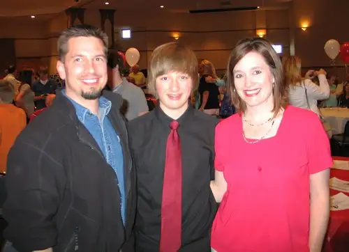
All of the teens looked so handsome and beautiful. I’m still a bit stunned to think we’ll have a high-schooler in our family come fall.
-4-
SWEET DEAL: Our middle child, not wanting to be outdone, decided we were not busy enough and that she should celebrate her birthday the next day. We kidnapped her from school and brought her to lunch, where she was treated to a free sundae. Her day ended with a birthday cherry pie (she could take or leave cake). (See my birthday letter to her here.)
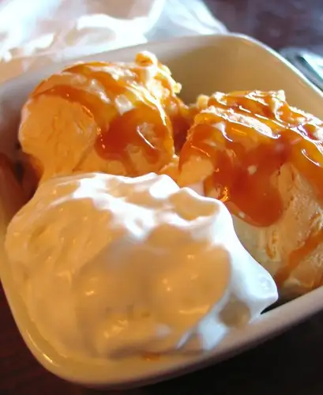
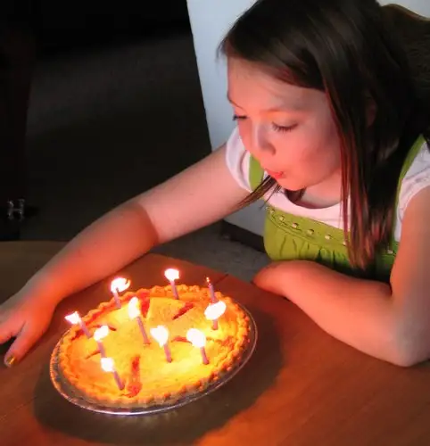
After dinner, she got her final treat — a spin around the town on her father’s motorcycle — helmet on of course!
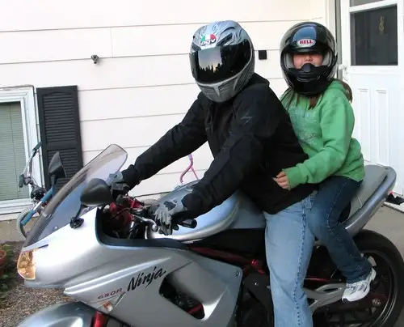
-5-
FLYING HIGH: This still wasn’t enough, so we got up at 3:30 a.m. to see our oldest son off on his 8th-grade trip to Valley Fair, and then, a few hours later, rose again to take part in our school’s annual Kite Day event. It was a gorgeous morning, and Spidey was raring to go.
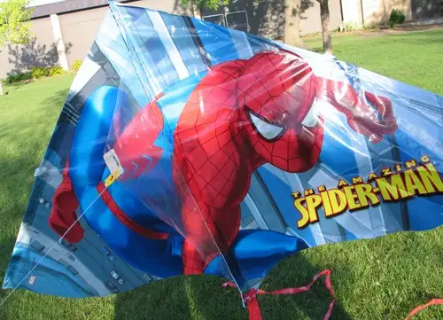
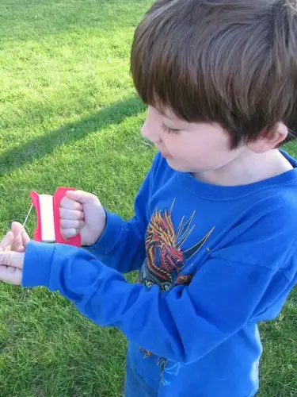
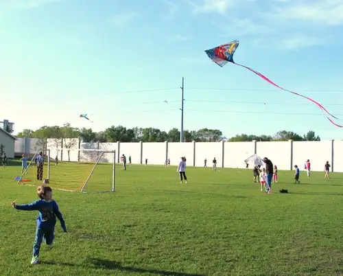
SUCCESS!
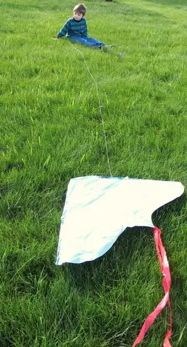
SURRENDER…
-6-
SHINY BUBBLES! A few hours after kites, it was time to head out to Lindenwood Park for another annual event: the last-day-of-school class picnics. What a stunning day filled with laughter and fun. Our group enjoyed tacos in a bag, then relaxed with bubbles before going on to the finale.
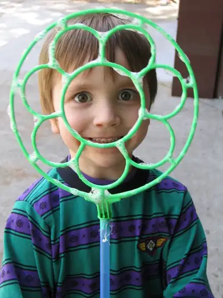
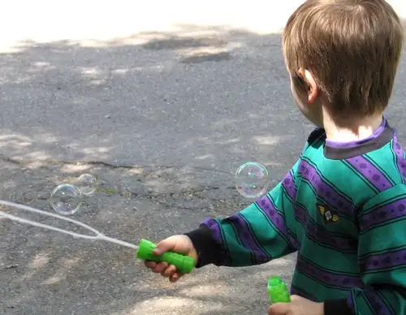
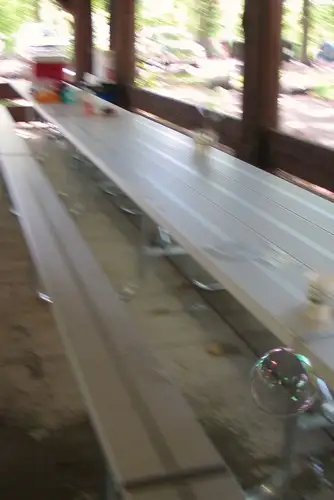
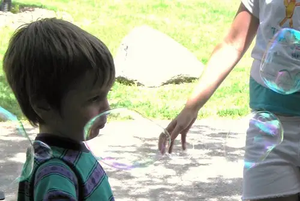
-7-
WET RAINBOW: Thankfully, the water balloons were saved for last. The kids were asked to toss under-handed, not throw over-handed, the water balloons to one another. With each “splat!” another could be retrieved from the bucket until none remained.
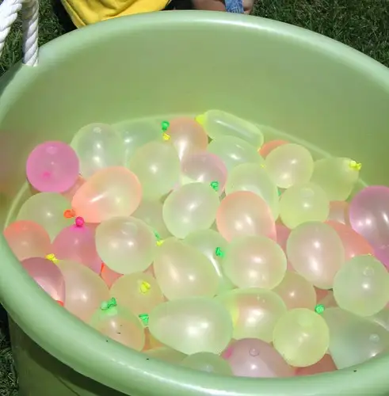
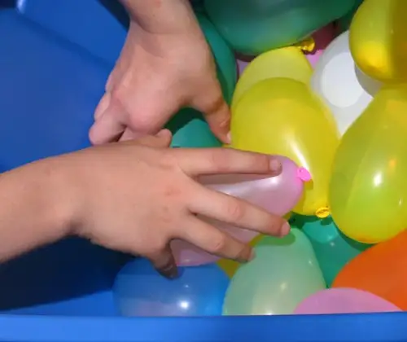
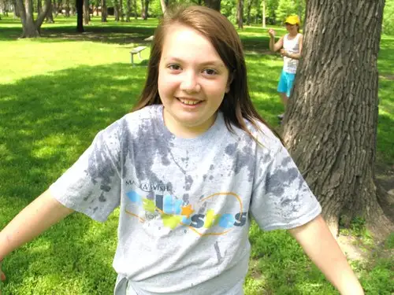
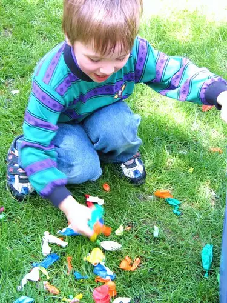
For every ten balloon parts picked up afterward, the children were rewarded with a bite-sized candy bar.
And now…it’s over. Summer vacation has begun!
Q4U: Now that we’re heading into it full swing, what’s your favorite part of summer? How about least favorite?
For more “quick takes,” visit Jennifer @ Conversion Diary!